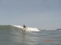

Fotos de Surf

| Fotos de surf tiradas de dentro d'água, na praia de Matinhos (PR). | Para comprar a foto digital original em alta resolução (e sem o carimbo do site), entre em contato. |
Fotógrafo: Aurelio Marinho Jargas verde@aurelio.net |
Adriane Celestino
Adriano
Alessandro Schmitz
Alex
Alex Lima
Alex "Láti"
Alexandre Accioly
Allan Lippel
Anderson Mauro "Deden"
Andressa Carvalho
Antony
Bárbara Sieno
Bruno
Cezar Teixeira "Digo"
Cris
Denise Dallegrave "Deni"
Diego "Oz"
Diogo "Toche"
Edgar "Gazo"
Emma
Eric
Fernanda
Gabriela
Gilberto Bongrats
Giuli
Guilherme
Gustavo
Gustavo Ravedutti "Nissin"
Henrique Ricardo "Tudá"
Hingriti Maia
João Marcos
Jonatan
Jorge Porvilho "Porva"
Júnior
Júnior "Badê"
Júnior Sartori
Juninho
Karen Cordova "Kika"
Kleiton "Xuxa"
Leandro
Leandro "Jacaré"
Leandro "Moranguinho"
Leonardo Sguarezi
Luan
Luciano
Luiz
Luiz Moreira "Ico"
Luli
Maikol Couto
Maria Augusta Borges "Guta"
Michel
Milton
Mohamed
Nani
Oscar
Paulo Taques
Péricles Dimitri "Pépe"
Pitchuco
Rafael "Dog"
Rafael "Rafa"
Renato Trogue
Ricardo
Ricardo Beraldi
Robert
Rômulo
Rodrigo Brown
Rones Caminha "Roni"
Samaroni
Samuca
Sanderson
Silvano
Stéfano
Talia
Thiago
Thiago "Lagarto"
Tiara
Tiquinho
Vicente Mozer
Vinicius
Vinicius "Nitio"
- 4 de Maio de 2006, Quinta-feira (1 foto)
-
Pico: Brava
Horário: 10h00 às 10h40
Condições: Ondas médias, sol e vento frio. - Sonzeira da semana: Hoodoo Gurus - Come Anytime
 30 de Abril de 2006, Domingo (4 fotos)
30 de Abril de 2006, Domingo (4 fotos)-
Pico: Pico
Horário: 08h45 às 09h15
Condições: Ondas médias e tubulares atrás da laje.  29 de Abril de 2006, Sábado (6 fotos)
29 de Abril de 2006, Sábado (6 fotos)-
Pico: Brava
Horário: 09h30 às 10h30
Condições: Sol forte com ondas médias de formação ruim. - 26 de Abril de 2006, Quarta-feira (11 fotos)
-
Pico: Brava
Horário: 09h15 às 10h45
Condições: Sol forte com ondas médias de formação boa. - Sonzeira da semana: Gene Loves Jezebel - Break The Chain
 23 de Abril de 2006, Domingo (3 fotos)
23 de Abril de 2006, Domingo (3 fotos)-
Pico: Brava
Horário: 17h00 às 17h30
Condições: Fim de tarde, ondas pequenas na maré seca. - Sonzeira da semana: Colin Hay Band - Into My Life
 11 de Abril de 2006, Terça-feira (17 fotos)
11 de Abril de 2006, Terça-feira (17 fotos)-
Pico: Brava
Horário: 09h30 às 11h30, 13h30 às 14h45
Condições: Dia de sol forte. Ondas lisas de manhã, mexido à tarde. - 10 de Abril de 2006, Segunda-feira (2 fotos)
-
Picos: Brava
Horário: 11h00 às 11h45
Condições: Algumas, de vem em quando. - Sonzeira da semana: Joe Satriani - Summer Song
 9 de Abril de 2006, Domingo (6 fotos)
9 de Abril de 2006, Domingo (6 fotos)-
Picos: Sesc, Pico
Horário: 10h00 às 13h00
Condições: Domingão ensolarado e crowdeado. Sesc irregular e fechando. Pico gordo e lento, mas divertido.  8 de Abril de 2006, Sábado (11 fotos)
8 de Abril de 2006, Sábado (11 fotos)-
Pico: Brava
Horário: 10h00 às 12h00
Condições: Ondas medianas de formação meia-boca, sol forte.  7 de Abril de 2006, Sexta-feira (16 fotos)
7 de Abril de 2006, Sexta-feira (16 fotos)-
Pico: Brava
Horário: 09h30 às 11h30
Condições: Ondas lisas, tempo nublado, água fria. - 6 de Abril de 2006, Quinta-feira (10 fotos)
-
Pico: Brava
Horário: 09h00 às 10h00
Condições: Ondas medianas de formação boa, tempo nublado, água fria. - 5 de Abril de 2006, Quarta-feira (14 fotos)
-
Pico: Brava
Horário: 10h30 às 12h00
Condições: Ondas medianas de formação boa, sol, água fria. - Sonzeira da semana: Oingo Boingo - Stay
 2 de Abril de 2006, Domingo (8 fotos)
2 de Abril de 2006, Domingo (8 fotos)-
Pico: Brava
Horário: 11h30 às 13h00
Condições: Ondas medianas de formação boa, tempo nublado, água fria.  1 de Abril de 2006, Sábado (11 fotos)
1 de Abril de 2006, Sábado (11 fotos)-
Pico: Brava
Horário: 10h30 às 12h30
Condições: Ondas medianas de formação boa, sol, água fria. - Sonzeira da semana: U2 - Lemon
- 23 de Fevereiro de 2006, Quinta-feira (18 fotos)
-
Pico: Brava
Horário: 09h30 às 11h30
Condições: Ondas medianas, de formação irregular, sol forte.  22 de Fevereiro de 2006, Quarta-feira (8 fotos)
22 de Fevereiro de 2006, Quarta-feira (8 fotos)-
Pico: Brava
Horário: 07h30 às 08h30
Condições: Fábrica de tubos. Show de bola.  21 de Fevereiro de 2006, Terça-feira (12 fotos)
21 de Fevereiro de 2006, Terça-feira (12 fotos)-
Pico: Brava
Horário: 09h30 às 11h30
Condições: Ondas grandes, tubulares e rápidas, sol forte. - Sonzeira da semana: New Model Army - 51st State
 15 de Fevereiro de 2006, Quarta-feira (24 fotos)
15 de Fevereiro de 2006, Quarta-feira (24 fotos)-
Pico: Brava
Horário: 09h30 às 12h00
Condições: Ondas pequenas de formação boa, sol forte.  14 de Fevereiro de 2006, Terça-feira (15 fotos)
14 de Fevereiro de 2006, Terça-feira (15 fotos)-
Pico: Brava
Horário: 10h00 às 11h00
Condições: Ondas médias de formação boa, sol forte.  13 de Fevereiro de 2006, Segunda-feira (16 fotos)
13 de Fevereiro de 2006, Segunda-feira (16 fotos)-
Pico: Brava
Horário: 10h00 às 12h00
Condições: Ondas médias de formação razoável, tempo nublado. - Sonzeira da semana: Bolshoi - Sunday Morning
- 12 de Fevereiro de 2006, Domingo (26 fotos)
-
Pico: Brava
Horário: 11h00 às 14h00
Condições: Ondas tubulares, perfeitas, tempo nublado. - 11 de Fevereiro de 2006, Sábado (10 fotos)
-
Picos: Brava, Sesc
Horário: 09h30 às 10h00, 18h30 às 19h30
Condições: De manhã mar liso com ondas grandes, frio e nublado. À tarde as ondas baixaram um pouco. - 10 de Fevereiro de 2006, Sexta-feira (7 fotos)
-
Pico: Brava
Horário: 09h45 às 10h45
Condições: Mar mexido com ondas grandes, frio e chuva fina.  08 de Fevereiro de 2006, Quarta-feira (32 fotos)
08 de Fevereiro de 2006, Quarta-feira (32 fotos)-
Pico: Brava
Horário: 17h00 às 19h00
Condições: Mar liso com ondas médias e rápidas, frio e chuva fina. - Sonzeira da semana: Down By Law - Best Friends
- 05 de Fevereiro de 2006, Domingo (10 fotos)
-
Pico: Atoleiro
Horário: 12h00 às 13h30
Condições: Mar mexido com ondas médias e irregulares, sol forte. -  04 de Fevereiro de 2006, Sábado (4 fotos)
-
Pico: Atoleiro
Horário: 12h00 às 13h30
Condições: Mar mexido com ondas médias e irregulares, sol forte.